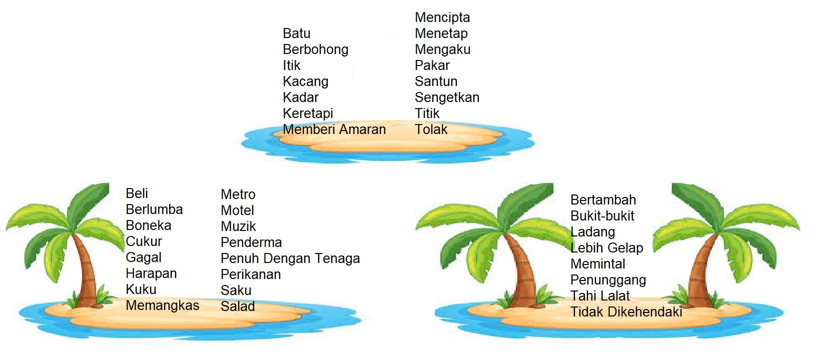

Islands
This island nation sure has many islands surrounding it!
Cortege 5 5 (8)
Ghost 5 5 (6)
Granite 5 4 (4)
Death Behind 5 7 4 (15)
One tree 5 6 (8)
A Deer and Palm 5 8 7 (20)
Brave 5 5 (7)
A Deer and Flag 5 8 7 (18)
Obstacle 5 6 (7)
Hero 5 7 (10)
Violin 5 5 (8)
Small Sister 5 5 5 (10)
Cone-Shaped Cover 5 6 (8, 6)
Note: For the 8th clue, there are some alternative spellings possible. For this puzzle, the second word should have 2 As and the third word should have 2 Es.

Click to show hints
We have noticed some Malay words, how do we solve the clues above?
This puzzle is about Singapore; the words are in Malay, her National language. Knowing this, you should be able to identify the 13 clued islands with a little bit of research. Once you've found the islands, you will get a clue phrase on what to do next.
I've got a cluephrase, and 39 words, but the search space is way too big to figure out how to match them up!
On the what3words site, searching for major geographic locations will return a single, canonical square that represents that location. Try doing that for the islands.